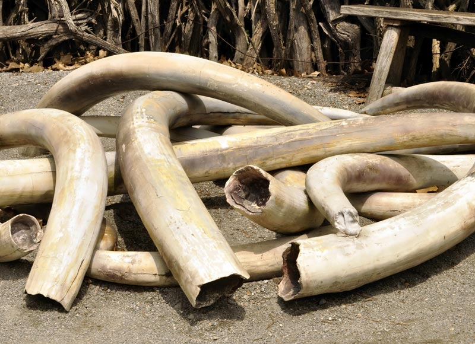
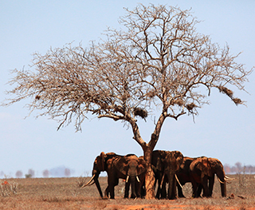

1. Ivory Tusks:
Due to the high demand of the ivory tusks of the elephants, roughly 20,000 elephants are killed by poachers each year.
These tusks are then illegally sold to the international market to be used as sculptures or other products.
In China, the demand for the ivory tusks are the highest, due to it being a symbol of luck, weath and status.
The ban on ivory trading in the 1980s was introduced by the Convention on International Trade in Endangered Species of Wild Fauna and Flora (CITIES) did initially aid some populations of elephants to recover.
However, the rise of demand in Asian countries like China in recent years has led to the increased poaching of the elephants again.

2. Habitat Loss:
As the African human population increases, activities such as overgrazing and construction of infrastructures like building occurs as well.
As such, it leads to habitat loss for the elephants as well. This causes hungry elephants to invade the local farms, which in turn causes resentment and hatred towards the elephants.
The conflict between human and elephant eventually increases, leading to the mass hunting of the elephants, causing their near extinction in some areas.
This conflict is not only dangerous for the elephant, but it might also harm the farmer as they do not have the proper equipments to do so.